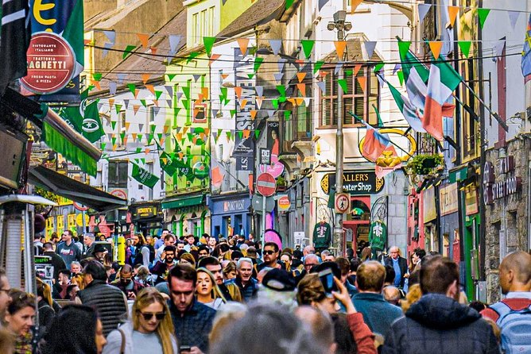
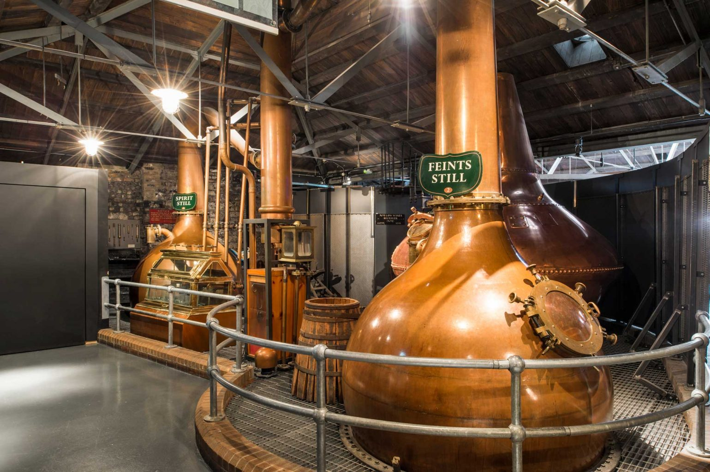
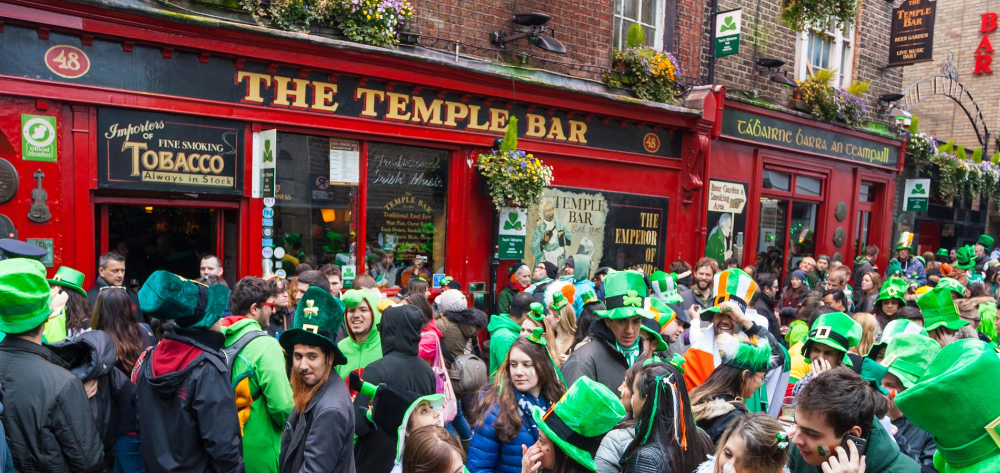

Dublin est la capitale officielle de la République d’Irlande. Ville cosmopolite, jeune et vivante, Dublin connait un essor sans précédent depuis plusieurs années, et est devenue une ville européenne à part entière, prônant le multi-culturalisme et le dynamisme économique. Les activités ne manquent pas, et cette ville est un véritable paradis pour le tourisme. Que ce soit pour le temps d’un week-end à Dublin, ou pour une découverte plus approfondie de la ville, Dublin n’en finit pas de surprendre les voyageurs du Monde entier par la qualité de ses attractions touristiques ! Voici une présentation de cette capitale haute en couleur mais qui n’en a pas moins gardé son échelle humaine…
Dublin évoque des grands noms de la littérature, l'architecture géorgienne et des torrents de Guinness. Là-bas, les soirées se passent à écumer les pubs au son de la musique animée. De jour, admirez les bâtiments superbes, les librairies suspendues dans le temps et les musées insolites tels que la bibliothèque Chester Beatty. Les espaces verts ne manquent pas, par exemple le parc de Saint Stephen's Green ou le jardin botanique d'Iveagh Gardens. Enfin, aucun séjour ne saurait se conclure sans une visite dans une distillerie locale où vous pouvez goûter aux alcools locaux comme le Jameson ou le Teeling.
Bibliothèque du Trinity College
Merveille de l'Ouest Irlandais
Pour comprendre le folklore, les traditions et l’histoire de Galway, il faut se rendre au Musée de la Ville (Galway City Museum). Vous pourrez y apprendre que la ville de Galway est aussi appelée «ville des tribus», en référence aux quatorze tribus qui se partageaient la ville au 13e siècle. Divers objets, sculptures et autres outils anciens y sont ainsi présentés.
Le bâtiment le plus imposant de la ville est la Cathédrale de Notre-Dame de l’Assomption et de Saint-Nicolas. Véritable mastodonte d’architecture, elle est visible d’un peu partout dans la ville avec son très haut dôme. Rentrez y faire un tour, son intérieur est lui aussi impressionnant !
Galway abrite aussi la plus grande église médiévale d’Irlande, l’Église Saint Nicholas, vous pourrez la découvrir au détour d’une ruelle, dans le vieux centre de Galway, à deux pas de Shop Street.
D’ailleurs toute l’architecture médiévale en pierre a été extrêmement bien préservée, et rénovée. Deux des meilleurs exemples de cette conservation sont la Spanish Arch construite au 16e siècle pour protéger le petit port de pêche de Galway et le Bridge Mills (moulin du pont) sur la rivière Corrib, vieux de 430 ans !

Une rue animée de Galway
Saviez-vous que les origines du whiskey sont irlandaises ? Bien que l’on attribue généralement cette découverte aux écossais, l’histoire de la création du whiskey est belle et bien 100% irlandaise ! Voilà pourquoi l’Irlande est tout aussi reconnue pour ses distilleries que son pays voisin !
Mais à chaque pays, ses techniques et son savoir-faire : voilà pourquoi l’Irlande, est reconnue depuis des siècles comme un spécialiste du whiskey… et sait se distinguer de la concurrence !
Il faut dire que le pays a plusieurs cordes à son arc : des ingrédients d’une grande pureté, un savoir-faire transmis sur plusieurs générations… et surtout, une technique unique en son genre : celui de la triple distillation !
S’il y a encore quelques années les distilleries irlandaises se faisaient rares, le spiritueux connait aujourd’hui une véritable renaissance. On le croyait mort et enterré, mais voilà que le whiskey irlandais renait de ses cendres et affiche une croissance insolente sur tous les marchés. Autrefois appelé « Uisce beathea » ce qui signifie eau de vie, le whiskey irlandais a terrifié les Anglais au XIIe siècle persuadés que cela rendait les Irlandais féroces au combat. Sir Thomas Philips acquit l'une des premières licences officielles en 1608, et créa aussitôt sa distillerie Old Bushmills. La fabrication des whiskies irlandais est bien différente de celle du scotch whisky. En effet, l’irish whiskey est produit à partir d’une orge non maltée, mais séchée généralement dans un four fermé et distillée trois fois dans de grands alambics, lesquels apportent un moelleux et un fruité caractéristique des whiskies irlandais.

La distillerie Jameson à Dublin
La convivialité à l'Irlandaise
Organisée chaque 17 mars, la Saint Patrick se déroule de nos jours, essentiellement dans la rue, et les Irish Pubs, lieux où vous pourrez trinquer en compagnie d’irlandais chaleureux et festifs.
Au programme, parades, concerts, sessions de musique traditionnelle en pleines rues, dégustations de bons petits plats irlandais, et pintes de Guinness ou autres bières irlandaises à gogo (à consommer avec modération bien sur) ! Possibilité bien sûr de danser, chanter, et faire la fête, peinturluré en vert, déguisé en leprechaun, ou simplement déguisé en Saint Patrick ! Ici, personne ne juge, les irlandais ne se prennent pas au sérieux, et c’est tant mieux !
Tout un programme qui démontre la simplicité et la chaleur festive des irlandais, toujours très attachés à leur pays !

Le Temple Bar, institution irlandaise